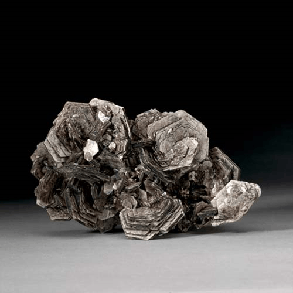

Muscovite - KAl2(Si3Al)O10(OH)2
Phyllosilicates


Habit: Colorless, gray, brown, green, yellow or rose red. Crystals tabular to columnar with hexagonal or pseudo-hexagonal outline; also lamellar masses and fine-grained aggregates. Vitreous to pearly or silky luster; transparent to translucent. White streak.
Environment: A common rock-forming mineral found in phyllites, schists and gneisses and in granites, granite pegmatites and aplites. Formed from other minerals under hydrothermal conditions.
Etymology: The name, first used in 1850, is derived from the term "Muscovy glass," because it was used for windows in Russia (Moscow, the Russian capital, was formerly called "Muscovy" in Western Europe).